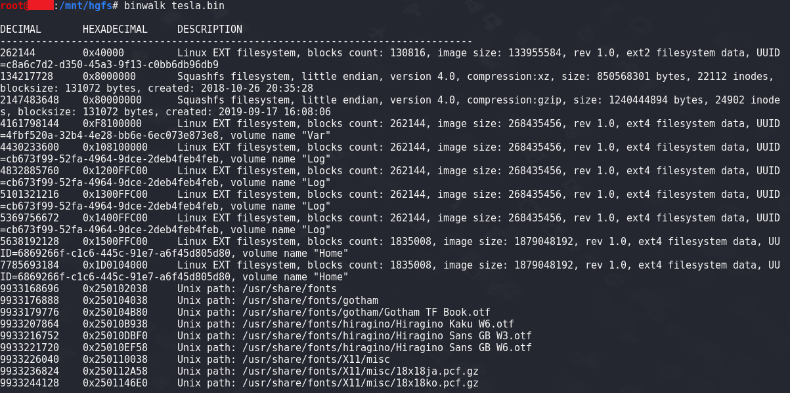
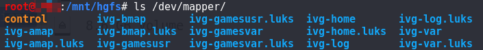
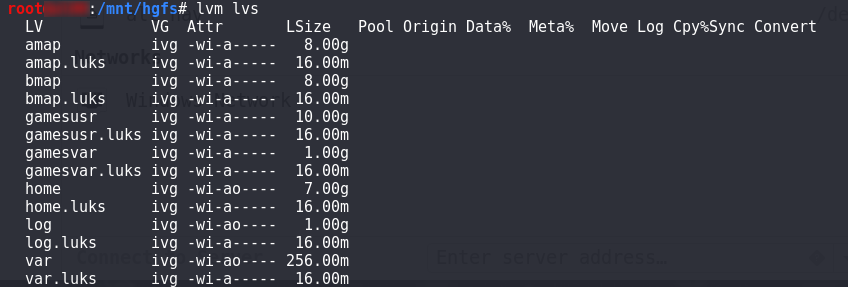
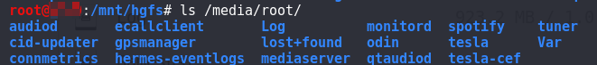
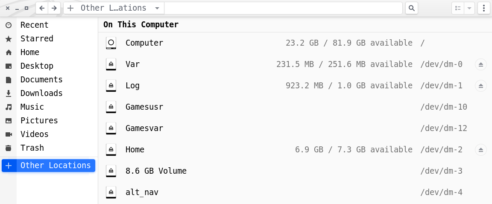

Tesla 车机固件分析第一步：从磁盘映像中提取文件系统
Tesla车机固件分析第一步：从磁盘映像中提取文件系统
提取磁盘映像文件
近期拿到了一个车机的磁盘映像文件，文件是从 Flash 上提取出来的。文件大小为 59.2G，估计是个 64G 的 Flash。
平常分析的设备 Flash 小的就几百KB，大的也不会超过百兆。一朋友想 binwalk 一把梭，这得提取到猴年马月，拿回来的东西还能看吗（结构可能混乱）。
拿到手 64G，然后是个车机的，根据车型可以知道车机运行 Linux 系统。既然是 Linux 系统，文件系统想必是 EXT4。

用 binwalk 看了看，确实是 EXT 的文件系统。但是分析的不对，怎么还有 squashfs，这不一般小型的设备才会用吗（PS. 后来 mount 发现确实是 Squashfs）。还是用 fdisk 看吧，这样更靠谱。使用 fdisk 查看磁盘映像的各个分区，-u 是以一个扇区为单位显示分区地址。
1 | root@kali:/mnt/hgfs# fdisk -l -u tesla.bin |
可以看到磁盘中有4个分区,前面三个是 Linux 文件系统，后面是一个 Linux LVM。是Linux 文件系统这样就好办了，可以用 mount -o loop 命令挂载回环设备。以下是对每个分区进行临时挂载。
1 | root@kali:/mnt/hgfs# mount -o loop,offset=$((512*512)) tesla.bin /media/part1/ |
第一个分区，里面是写一些镜像文件。
第二个分区和第三个分区，里面都是 Linux 根文件系统。两个分区的内容一模一样，其中一个应该是作为备份使用。
第四个分区是 LVM，之前还真没接触过。直接 mount 无法挂载。查资料 了解到 LVM(Logical Volume Manager)逻辑卷管理是一种将一个或多个硬盘的分区在逻辑上集合，相当于一个大硬盘来使用，当硬盘的空间不够使用的时候能够灵活调整。LVM 磁盘挂载稍微麻烦一点。
使用回环设备管理命令 losetup 加载磁盘映像，
-o指定偏移地址。1
root@kali:/mnt/hgfs# losetup -f -o $[8126464*512] tesla.bin
使用
losetup -a可以看到加载的磁盘映像。1
2root@kali:/mnt/hgfs# losetup -a
/dev/loop0: [0040]:18 (/mnt/hgfs/tesla.bin), offset 4160749568查看物理磁盘卷。lvm 命令是专门用于管理 lvm 磁盘的。
1
2
3root@kali:/mnt/hgfs# lvm pvscan
PV /dev/loop0 VG ivg lvm2 [55.40 GiB / 20.04 GiB free]
Total: 1 [55.40 GiB] / in use: 1 [55.40 GiB] / in no VG: 0 [0 ]可以看出磁盘磁盘的大小为 55.40GB，有 20.04GB 的剩余空间。
激活逻辑卷
使用
lvm vgchange -ay命令激活了 14 个逻辑卷。1
2root@kali:/mnt/hgfs# lvm vgchange -ay
14 logical volume(s) in volume group "ivg" now active虚拟出来的设备在
/dev/mapper/目录下。
也可以使用
lvm lvs命令查看逻辑卷信息。
挂载设备
将
/dev/mapper/目录下的设备挂载后就可以查看磁盘文件内容了。1
root@kali:/mnt/hgfs# mount /dev/mapper/ivg-home /media/root/

后面测试发现，可以使用losetup -f -o加载磁盘映像文件，然后使用文件管理器点击自动完成激活与挂载过程。
此外，losetup 也可以用来挂载其他格式的硬磁盘映像。
1
2mount -o loop,offset=$((512*512)) tesla.bin /media/part1/
losetup -f -o $[512*512] tesla.bin
参考
致谢
感谢一个不愿透露姓名的白帽汇大佬提供了车机固件。
首发于：火线Zone